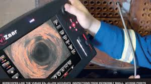
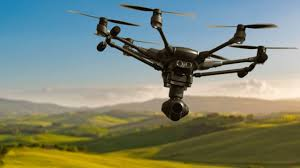
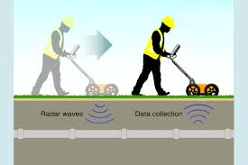

Explore temple tunnels safely — share them in VR.
A small, modular rover that maps tight, fragile spaces and creates VR experiences.
Identify — core problems
Quick summary and visual evidence from our early research, site visits, and reading.
Photos & evidence
Visits to the MET, documentary stills, and our reading sessions documented here.


Articles & sources we read
Key readings that informed our approach and constraints.
- Remote sensing and GIS applications in archaeology — Journal of Archaeological Science
- Conservation ethics and site preservation — Antiquity / Heritage journals
- Small-scale robotics for cultural heritage — Heritage Science
- Imaging and low-light photography techniques — Journal of Field Archaeology
- Human impact and site vulnerability studies — World Archaeology
- Best practices for non-invasive sampling — Conservation literature
Our Initial Research & Brainstorming
We surveyed many archaeological challenges.
From Diverging to Converging
We narrowed the list by voting as a team.
Our final focus
Conversation with Grace Howe
A quick glance at our Zoom call with archaeologist Grace Howe and the key safety guidance she shared.

- Assess stability: check roofs, loose sediment, and ventilation before entry.
- Non-invasive approach: prioritize remote sensing and avoid physical disturbance.
- Preserve context: document in place; avoid moving artifacts or altering layers.
- Design constraints: narrow passages and short access windows demand compact, low-vibration robots.
Research — what we compared
A quick look at common inspection tools and why they fall short in fragile, narrow tunnels.
Tethered borescope
Flexible camera on a cable for tight spaces.
- Pros: Ultra-slim, low cost.
- Cons: Snag risk, limited mapping.
Drones
Aerial inspection for larger chambers and open shafts.
- Pros: Fast survey, high-angle visuals.
- Cons: Too large for narrow tunnels, airflow disturbance.
Ground-penetrating radar (GPR)
Non-invasive subsurface scanning for voids and structures.
- Pros: Detects hidden features without entry.
- Cons: Indirect data, limited tunnel visuals.
Summary — key gaps
No single option meets all needs: narrow fit, low vibration, and reliable mapping.
Clear targets before we designed
These were the outcomes we aimed for to guide planning and brainstorming.
Goal infographic
Affordable parts and simple build.
Sense obstacles in tight tunnels.
Protect fragile spaces.
Record data for VR.
These goals set our direction before planning and brainstorming.
Why VR matters
VR lets people explore ancient spaces from the rover’s perspective — without traveling, without entering danger, and without risking damage.
Design — planning the rover
We used IDEO’s 7 rules to brainstorm, sketch, compare tradeoffs, and organize responsibilities.
7 rules of brainstorming — fun edition
Sketches + drawings collage


Creative timeline — across the project
A single, horizontal view of our full design process.
Create, iterate, communicate
Timeline of builds, feedback, and upgrades.
Timeline (top to bottom)
With a plan in place, we moved into the create phase and began building multiple versions of our rover. Our first model was made from cardboard so we could quickly visualize the size, layout, and placement of components before building with LEGO. After that, we built fully LEGO-based prototypes to test movement, stability, motor placement, structure, and cable management.


We reached out to science and technology teachers for feedback. They noted SPIKE Prime wheels struggle on uneven terrain. We researched treads, designed custom ones in Tinkercad, and 3D‑printed them. We also designed a protective plate to shield the treads in rough environments.


After creating our 3D‑printed parts, we reached out to Grace Howe again. She suggested using multiple distance sensors and carefully considering their placement. Based on her advice, we added three distance sensors, placed high in the front and one in the back. This reduced blind spots and improved mapping in tight spaces.
Programming — making decisions from sensor data
We tested different logic and adjusted it repeatedly to improve reliability while navigating tight spaces.
Programming highlights
- Basic logic: obstacle detection → slow/turn, otherwise forward
- Three distance sensors reduced blind spots
- We logged sensor data for mapping and debugging


Future improvements
We want to strengthen the rover, upgrade sensing, and improve mapping accuracy for better VR experiences.
Next hardware steps
- Durability: better panels and protection
- Sensing: swap to cameras for mapping
- VR: process visuals into immersive walkthroughs
Future visuals

Closing
This project protects people and history. We developed prototypes and tests toward a VR experience — here is the progress we made so far.